400 × 200 × 3 mmのPMMA板をKirchhoff–Love薄板として離散化し、上辺内側の x=200–300、y=0–20 mmを固定しています。8打点を単位力積で励起し、中央センサ `(200, 100) mm` で観測可能なモード結合を比較した、従来のシミュレーションページです。
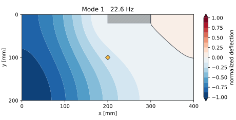
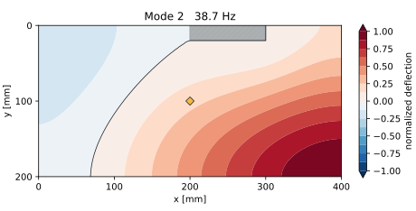
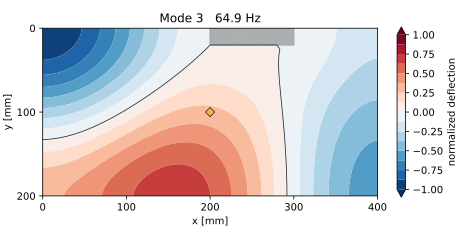
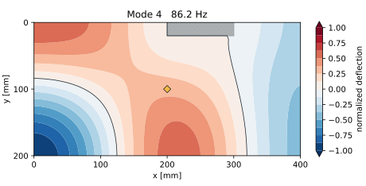
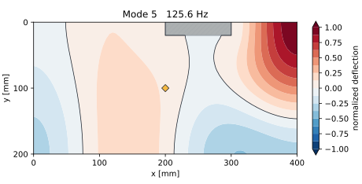
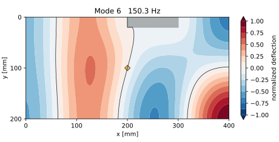
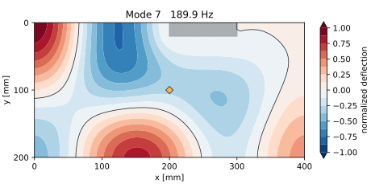
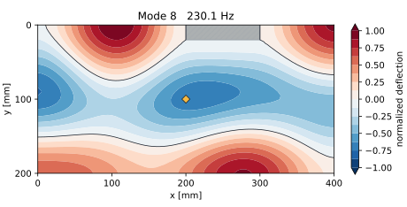
18モードの加速度振幅を二乗平均平方根で重ね、8打点共通の最大値で正規化しています。星が打点、緑の菱形が中央センサ、斜線部が100 × 20 mmの固定領域です。
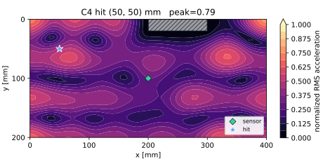
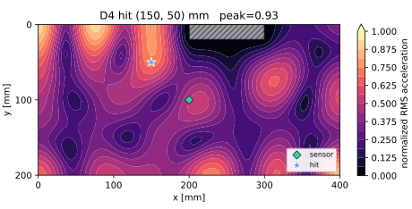
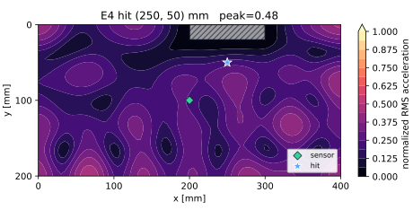
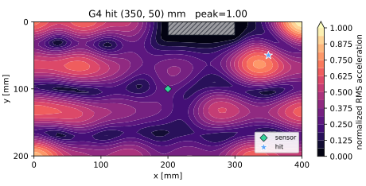
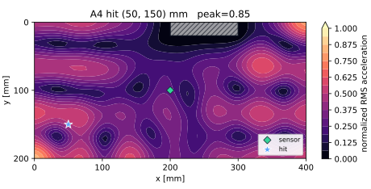
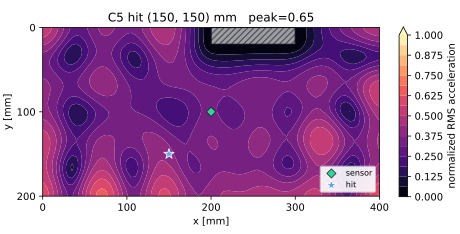
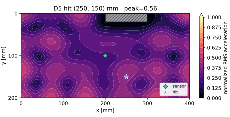
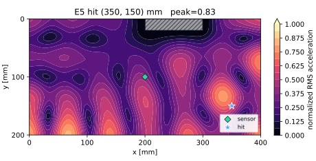
打点を選ぶと、中央センサで観測される先頭8モードの相対結合強度を表示します。各打点内の最大値を1に正規化しています。
Mode 1–8：22.56 / 38.71 / 64.89 / 86.21 / 125.60 / 150.25 / 189.87 / 230.09 Hz
中央センサ1個のZ加速度を、低周波モデル比較用の解析条件6.4 kHz・2,048点で計算しています（実機収録は25.6 kHz）。8打点共通スケールなので、波形形状、卓越周波数、相対ピークを比較できます。
| モデル | Kirchhoff–Love薄板の有限差分 | 面外変位1自由度/節点 |
|---|---|---|
| 格子 | 81 × 41 = 3,321節点 | x/yとも5 mm間隔 |
| 材料 | E=3.2 GPa、ν=0.35、ρ=1,180 kg/m³ | 等方PMMA |
| 固定 | x=200–300、y=0–20 mm | 105節点で面外変位を拘束 |
| 固有値 | SciPy eigsh | 先頭18モード |
| 実行環境 | 専用Dockerイメージ | acrylic-pan-solid-fem:local |
D = E h³ / {12(1 − ν²)}
K = D ΔA LᵀL
M = ρh ΔA I
Kφ = λMφ, f = √λ / (2π)
aRMS(x, hit) = √{ 1/2 Σm [φm(x) φm(hit) ωm]² }使用ソフトと全実行条件は シミュレーション使用ソフト・実行条件、数式は 従来の板モデル解析仕様、波形は 中央センサ時間波形・FFT仕様、3D版は 3次元ソリッドFEM解析仕様 を参照してください。